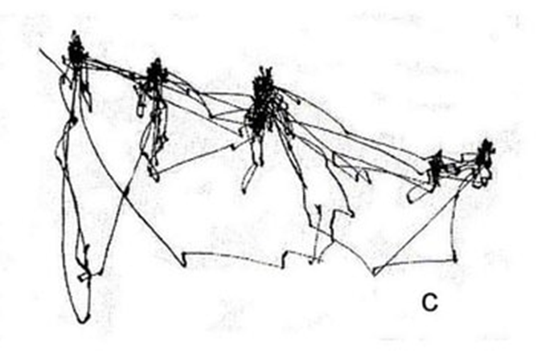

Introduction to Eye-tracking I
Eye-tracking in Language Research
Welcome
The team:
- Email: esperanza.badaya@ugent.be
- Working hours: Monday to Friday 9 to 17.
- Response time: 24/48h.
- Office hours: Fridays 10 to 12, office 140.005.
Welcome
- Binger Lu

- Mariia Baltais
Welcome
What is your background?
What are your interests?
Do you have any experience in research?
- And with eye-tracking?
What are your goals with this course? What would you like to get from it?
The course
Goal: Introduction to the eye-tracking technique in the whole cycle of a research project.
- Focus on paradigms in psycholinguistics.
In more practical terms, this means…
Overview of the course: Eye-tracking
- Introduction to eye-tracking
- Why do we do it?
- Measures
- Introduction to the technicalities of eye-tracking
- How it works
- How to conduct an experiment in the lab
Overview of the course: Language research
Language research:
- What do you want to study?
- Speech comprehension?
- Reading?
- Speech production?
- Writing?
Overview of the course: Language research
Language research:
- What do you want to study?
- Speech comprehension? Visual World Paradigm
- Reading? Single sentence reading
- Speech production? Visual World Paradigm
- Writing?
Note: The focus won’t be the findings themselves (this is not a psycholinguistics course).
Overview of the course: Cycle of a research project
- Design
- What each paradigm is
- Elements of the paradigm
- Eye-tracking component
- Confounding factors
Overview of the course: Cycle of a research project
- Programming and conducting the experiment
- Software
- How to run the experiment
- Troubleshooting
- Data acquisition
Overview of the course: Cycle of a research project
- Data pre-processing
- The nature of our data
- Data exploration
- Participant and trial data
- Lab log
- Data cleaning
Overview of the course: Cycle of a research project
- Analysis
- The nature of our data
- Data visualization
- Data transformations
- Statistical analysis
Overview of the course: Cycle of a research project
- Reporting
- Reproductibility
- Transparency
- Eye-tracking details
Overview of the course: Organisation
4 preliminary “theoretical classes”
6 practical classes
- Coding session
- Lab visits & data collection
- Pre-processing session
- Data analysis session
1 “wild card” class: Preparation for the report & additional topics
Overview of the course
If we put all of these together we have:
| Date | Content |
|---|---|
| 12th Feb | Introduction to eye-tracking |
| 19th Feb | Introduction to eye-tracking |
| 26th Feb | Visual World Paradigm |
| 5th Mar | Reading |
| 12th Mar | 1st coding session |
| 19th Mar | 2nd coding session + Exam |
| 26th Mar | 1st Lab session (in groups) |
| 2nd Apr | 2nd Lab session (testing) |
Overview of the course
If we put all of these together we have:
| Date | Content |
|---|---|
| 23rd Apr | Data pre-processing |
| 30th Apr | Data analysis and reporting |
| 7th May | Mini lecture |
| 14th May | Presentation |
NB: Presentation date may be moved to the 21st
Overview of the course: Organisation
Slides + readings
- Articles
- Ufora “forum”
- Experiment Builder tutorials
- Templates of scripts & learn about its components
Technical aspect of the course
Experiment Builder.
- This course is designed assuming zero knowledge of coding.
Problem: Experiment Builder is licensed.
Solution (?): Trial version on Ufora -> build skills -> coding session with dongle.
Technical aspect of the course
Experiment Builder tutorials
- Exercises are not mandatory
- Some terms will become clearer the more we learn about eye-tracking.
- There are also Q&A sections without deadlines.
- You can progress at the speed you want (but I will state by when a certain module must have been read).
Technical aspect of the course
If you are comfortable with Python, and want to code the experiment in PsychoPy/OpenSesame, you are welcome to do so.
- This won’t grand you a higher grade (for fairness’s sake)
- Some designs (e.g., for speech comprehension) are easier than others (e.g., reading)
- Come talk to me if you are considering this venue.
Overview of the course: Evaluation
2 components: Exam and project
- Exam: 20%
- Project: 80%
- 20%: Presentation
- 60%: Written report
Overview of the course: Project
7 teams (4 members)
- Team up with people with similar interest and/or complementary skills.
- Deadline: Next Tuesday
- Topic: An original idea or a replication of a paper.
Overview of the course: Project
~ Registered report
- Introduction: Rationale for the experiment and whether eye-tracking is appropriate.
- Hypotheses: Map the research question onto eye-tracking measures.
- Methods: Materials, participant sample, considering confounding factors.
- Procedure: Experiment procedure + eye-tracking components
- Data pre-processing: Description of data cleaning, transformations.
- Data analysis and results: Descriptions of model used (and whether it answers the question) + visualizations
- Discussion
All in APA-style, clearly written and structured.
- Transparency and reproducibility.
Overview of the course: Project
~Conference presentation
- Introduction, research question & hypotheses, method, results
- Data visualization
- Clarity of exposition
- Engagement with post-presentation questions
Overview of the course: Deadlines
- 18th Feb: Group nomination
- 11th Mar: Discussion of research project
- 19th Mar: Exam
- 6th Apr: Submission write-up project (non-assessed)
- 13th May: Submission presentations
- 8th June: Written report
Questions thus far?
Introduction to eye-tracking I
Overview
- What is eye-tracking?
- Why do we track eyes?
- The human visual system
- Visual attention
- Eye movements
- Brief introduction to language research
What is eye-tracking?
What is eye-tracking?
Eye-tracking is a non-invasive technique to explore cognitive processes as they unfold (i.e., online processing) via eye movements. It has temporal resolution.
- Opposed to EEG, fMRI
- Opposed to offline measures
Why do we track eyes?
Why do we move our eyes? The Human Visual System
Younis, Nuiamy, & Alomari (2019), note that foveal is not central vision
Why do we move our eyes? The Human Visual System
Important parts of the eye’s anatomy:
- Cornea
- Pupil
- Retina
- Fovea
- Parafovea
- Periphery
Why do we move our eyes? The Human Visual System
- Light hits the cornea.
- Some light is reflected (Purkinje reflections)
- Light enters the eye via the pupil.
- The lens focuses light onto the retina.
- Size of the image is measured in visual angles.
Why do we move our eyes? The Human Visual System
What are visual angles?
- Interplay between object size and distance.
- Bigger objects = larger retinal images.
- Closer objects = larger retinal images.
- Larger visual angles = objects appear bigger in your vision.
- How much of the visual field an object occupies.
- Spoiler: Consequences for lab set up and stimuli presentation.
- How much of the visual field an object occupies.

Why do we move our eyes? The Human Visual System
- The lens reflects the light onto the retina.
- Photosensitive layer with cones and rodes.
- Light is transformed into electrical signals.
Why do we move our eyes? The Human Visual System
Photoreceptors with different properties (e.g., spectral sensitivity, photopigments).
- Cones
- Color vision and spatial frequency (“visual details”).
- Well-illuminated conditions (photopic vision).
- Rods
- Sensitive to light.
- Low-light conditions (scotopic vision).
Why do we move our eyes? The Human Visual System
They also differ in where they are located in the retina.
- Cones: Highest density in the fovea.
- Rodes: Density increases as we move away from the fovea.
Why do we move our eyes? The Human Visual System
Retina:
- Fovea: 1-2 degrees of visual angle.
- Parafovea: 10 degrees of visual angle to either side.
- Peripheria: Remaining space beyond the parafovea.
Why do we move our eyes? The Human Visual System
Therefore, we move our eyes to place visual stimuli in the fovea to process it with the highest acuity. Eye movements are a consequence of the eyes’ anatomy.
- Parafoveal processing: No acute image, words still partially recognizable.
- Peripheria: Blurred image, no word/letter recognition.
Why do we do it? Visual attention
What do you notice about the eye movements here? What do you infer from them?
Why do we do it? Visual attention
Attention (i.e., linking hypothesis)
- Tracking eye movements can tell us what viewers are paying attention to.
Why do we do it? Visual attention
Attention determines what we process and the detail of the representation built.
Why do we do it? Visual attention
Attention (i.e., linking hypothesis)
- Bottom-up and top-down processes.
- Details that attract individuals’ attention (exogeneous) v. Individuals’ strategies (endogeneous).
- Individuals as active viewers.

Why do we do it? Visual attention
Yarbus (1967): Scanpaths guided by attention.

They Did Not Expect Him, Iliá Repin
Why do we do it? Visual attention
Why do we do it? Visual attention

Why do we do it? Visual attention

Why do we do it? Visual attention
Attention is a bridge between our minds and eye movements.
Potential caveat
- Covert versus overt attention:
- Covert: Mental shift without physical evidence (e.g., looking at the slides while thinking about lunch).
- Overt: Moving your eyes to check what time it is.
We only have access to overt attention.
Why do we do it? Visual attention
- In language1: The eye-mind hypothesis (Just & Carpenter, 1980).
- Where we look indicates what we are processing, for how long we look indicates the cognitive effort it takes to process it.
- This is an assumption (cf. Pickering et al., 2004).
Why do we do it? TL;DR
- Visual acuity is highest in the fovea, but the fovea is a rather small section of the retina.
- Moving our eyes helps us to ‘place’ objects on the fovea.
- Why do we want to place something there? Arguably, because we are interested in it.
- We move our eyes to what captures our attention to process it.
Eye movements
Eye movements: Binocular Nature
- One dominant eye1.
- Binocular disparity:
- Relatively small in healthy subjects.
- Decreases over the time of a fixation.
- No complete temporal synchrony in eye movements.
Eye movements: Measures
What eye movements can you think of?
- Think of how we talk about things: we fixate on things, we move our eyes.
- We also blink.
- Our pupils also change in size.
Eye movements: Measures
What eye movements can you think of?
- Fixations
- Saccades
- Blinks
- Smooth pursuit
- Pupil size changes
Eye movements: Measures
What eye movements can you think of?
- Fixations
- Saccades
- Blinks
- Smooth pursuit
- Pupil size changes
Eye movements: Fixations
When our eye ‘stops’ i.e., multiple gaze points close in time and/or space.
Eye is relatively stable.
Average duration: 200 - 300 ms.
Minimal duration: 20 - 50 ms (not standard).
Time it takes to launch a saccade: ~ 200 ms (Matin et al., 1993).
Eye movements: Fixations
When our eye ‘stops’.
- Eye is relatively stable.
- Tremor, drifts, microsaccades.

Eye movements: Fixations
Alexander & Martinez-Conde (2019)
Eye movements: Fixations
- Tremor: Smallest of the movements.
- Drifts: Slow movement away from the center of the fixation, happens between microsaccades.
- Microsaccades: Move back the eye to the center of the fixation.
Eye movements: Fixations
Eye movements: Fixations
- Tremor: Smallest of the movements.
- Drifts: Slow movement away from the center of the fixation, happens between microsaccades.
- Microsaccades: Move back the eye to the center of the fixation.
- Perceptual fading: Troxler fading.
- Only microsaccades can restore it, while drift and microsaccades prevent fading.
Eye movements: Saccades
Eye movements: Saccades
“Jerky” movement: Fast movement of the eye, usually from one fixation to another.
- Temporary blindness (i.e., saccadic suppression).
- Ballistic
- Reactive saccades versus Voluntary saccades.
- Sudden appearance of an object versus Exploration.
Eye movements: Saccades
Eye movements: Saccades
Eye movements: Saccades
Parameters
- Amplitude: distance travelled.
- Average: 15°.
- Temporal parameters (onset, offset, duration).
- Average duration: 30 - 80 ms.
- Direction: Forward and backwards (i.e., regressions) saccades.
- Over- and under-shooting & corrections (glissades)
Eye movements: Saccades
Forward and backwards (i.e., regressions) saccades.
- Short and long regressions.

Conklin et al. (2018)
Eye movements: Blinks
By necessity, people blink.
- Variability across individuals.
- Cognitive effort.
- Usually, surrounded by saccades.
- Pupil changes when eyelids open/close.
Eye movements: Smooth pursuit
A “moving fixation” ~ following a target.
- Slower than a saccade, but bounded by the velocity of the target being followed.
- Asymmetrical: Horizontal > vertical.
Eye movements: Pupil size
- Pupil: Absence of iris
- 3 mm, [2mm, 8 mm]
- Changes because of mental processes 0.5 mm
- Size ~ amount of light that enters the eye
- Smaller: sharper vision
- Bigger: less acuity, but more light.
Why does our pupil change in size? Taxonomy
- Taxonomy by Strauch et al. (2022)
- Different networks
Low-level
- Pupillary light reflex
- Pupil Near response
- Dark reflex
Intermediate-level
- Alerting responses
- Orienting responses
High-level
- Mental arousal
Why does our pupil change in size? Pupillary light reflex (PLR)
Sequence: Constriction to a minimum -> escape -> return to normal
Mathôt (2018)
Why does our pupil change in size? Taxonomy
Low-level
- Pupillary light reflex
- Pupil Near response
- Dark reflex
Reading/hearing words that convey brightness/darkness
Why does our pupil change in size? Intermediate-level processes
Mathôt (2018)
Why does our pupil change in size? Higher-level processes
Mathôt (2018)
Eye movements: Pupil size”
Pupil size change as an index of “cognitive load”.
- Locus coeruleus and norepinephrine activity
- Correlation of neuron firing activity in the LC and pupil diameter
In reality, a more complex picture.
- Cholinergic system
- Serotonergic system
- Dopaminergic system
See Strauch et al. (2022); Joshi & Gold (2020)
Why does our pupil change in size? Higher-level processes
- Mental effort
Kahneman & Beatty (1966)
Why does our pupil change in size? Higher-level processes
- Allocation of resources
Why is it important to think in terms of recruitment and allocation of resources.
Chiew & Braver (2013)
Why does our pupil change in size? Higher-level processes
- Allocation of resources
Chiew & Braver (2013)
Why does our pupil change in size? Higher-level processes
Fink et al. (2023)
Eye movements: Pupil size
Increasing interest in language research e.g., accented-speech comprehension.
Changes can take up to 3 s.
- Far longer than other eye events.
- Requires very carefully designed experiments
Not the focus of this course.
Eye movements: Conceptualisation
Field-specific
- Lots of measures & linking hypotheses
- Lots of ways to convey information
Eye movements: Conceptualisation
Lots of ways to convey information
Example: Reading
- Fixations and saccades grouped into early/intermediate/late measures
- Which map onto different hypothesized processes
- Fixations and saccades grouped into early/intermediate/late measures
Eye movements: Conceptualisation
Eye movements can be later operationalised as a function of the research question.
- Space
- Space x Time
Eye movements: Space
We talk about Areas of Interest (AOI)1.
- Use to explore eye movements around them.

Eye movements: Space x Time
Speech comprehension
- When a fixation is triggered towards an object upon hearing its name.
Reading
- Timed measures: first fixation duration, total reading time.
- How long did a person spent reading a certain word the first time they saw it?
Eye movements: Conceptualisation
Lots of ways to convey information
- Qualitative

Eye movements: Conceptualisation
- Quantitative
Eye movements: Conceptualisation
- Quantitative

Eye movements: TL;DR
- There are five major eye movements (or events) that an eye-tracker can capture.
- Fixations refer to ‘stable’ gazes on a space for a sustained period of time. We usually describe them in terms of how many they are, when they start, and how long they are.
- Saccades are fast movements, commonly from one fixation to another. We describe them in terms of onset, offset, angle, velocity, latency, and acceleration.
- Smooth pursuits are fixations that move.
- Pupil size can change due to cognitive processing, whereby its size increases when effort is exerted.
- In eye-tracking, we explore these eye movements in relation to time, space, and their interaction.
Eye-tracking in language research
Eye-tracking in psychology research
Research traditions: Visual search (serial versus parallel processing), reading research (processed involved in text comprehension), scene perception (forming a representation of a scene), usability.
- Flash-preview moving-window paradigm, visual world paradigm, antisaccadic paradigm, saccadic mislocalization, social interaction paradigm, change blingness paradigm, gaze-contigent paradigms, preferential-looking paradigms, prosaccade paradigm…
- & combination of other paradigms with eye-tracking.
Example: Scene perception
- Scene perception: Presentation of images (complex/simple) to explore allocation of attention and visual processing.
- Fixations on interesting and informative regions (Henderson, 2003)
- Bottom-up versus top-down versus task-related
Example: Scene perception
Castelhano & Henderson (2009)
Eye-tracking in language research
What are the eye-tracking paradigms in language research?
Focus of this course:
- Visual World Paradigm
- Single sentence reading
Eye-tracking in language research
Visual World Paradigm
- VWP has predominantly been used to investigate speech comprehension as it unfolds.
- Different levels of language comprehension (Huettig et al., 2011)
- Phonological level (e.g., Allopenna et al., 1998)
- Lexical level (e.g., semantic prediction, Altmann & Kamide, 1999)
- Syntactic level (e.g., Knoeferle et al., 2005)
- Discourse level (e.g., van Bergen & Bosker, 2018)
- Pragmatic level (e.g., Grodner et al., 2010)
- Dialogue (e.g., Brown-Schmidt & Tanenhaus, 2008)
- Paralinguistic cues (e.g., Arnold et al., 2004)
- Linguistic relativity (e.g., Papafragou et al., 2008).
- Children
- Aphasic patients (e.g., Mirman et al., 2011)
- Non-native listeners (e.g., Ito et al., 2018)
Eye-tracking in language research
Visual World Paradigm
Both verbal and non-verbal features exist when we produce and comprehend spoken language, and they can facilitate communication. Disfluencies (e.g., um or uh in English) are predominant in spontaneous speech.
- Do they affect listeners because of beliefs about disfluencies, or because of social reasoning?
- Research question: Whether and how disfluent speech can be interpreted as deceitful, and whether there is an effect of interlocutors’ linguistic background (i.e., native versus non-native interlocutors).
Eye-tracking in language research
Visual World Paradigm: Treasure-hunt task


Eye-tracking in language research
Visual World Paradigm

Eye-tracking in language research
Visual World Paradigm
Conclusions:
- Participants made their decision shortly after the potential location was said (circa 400 ms).
- The presence of a disfluency not only led to more interpretations of deceit, as reflected in the object selected, but also biased eye movements early.
- There was no difference between native and non-native speakers.
The interpretation of deceit triggered by disfluencies is inflexible, and likely heavily anchored in a stereotype of how deceit sounds (without any form of social reasoning).
Eye-tracking in language research
Reading experiments
- Explore reading behaviour to make inferences about underlying linguistic processing mechanisms (lexical access, semantic and syntactic integration, prediction…)
- Word recognition (e.g., frequency effect, Rayner & Duffy, 1986)
- Syntactic processing (e.g., structural ambiguities, Frazier & Rayner, 1982)
- Semantic integration (e.g., plausibility effect, Staub et al., 2007)
- Predictive processing (e.g., Frisson et al., 2017)
- Parafoveal processing (e.g., Juhasz et al., 2009)
- Text comprehension (e.g., Dirix et al., 2019)
- Multiword units (e.g., Carrol et al., 2016)
- Children (e.g., Blythe et al., 2011)
- Older adults (e.g., Solan et al., 1995)
- Clinical populations
- Children with dyslexia, Hyönä et al. (1995)
- Adults with ASD, Howard et al. (2017)
Eye-tracking in language research
Reading
Constructions = grammatical patterns. Their productivity = the number of different words they can be used with. If productivity is high, there are many possible continuations that a sentence with this construction can have (example: “He started to…”). If productivity is low, there are very few possible continuations (example: “He burst into…”).
- In this low uncertainty situation, will a prediction error occur if readers see a continuation they did not expect?
- Research question: Does low productivity of syntactic constructions lead to processing difficulty for unexpected lexical items?
Eye-tracking in language research
Reading
High productivity condition:
- Francisco | se metió a | hablar | de política | con sus amigos
Low productivity condition:
- Francisco | rompió a | hablar | de política | con sus amigos
Eye-tracking in language research
Reading
se metió a / rompió a
hablar


Eye-tracking in language research
Reading
Conclusions:
- Low productivity was not associated with prediction error cost, so processing was not hindered by any unmet expectations.
- Low productivity affected reading (integration and interpretation) of the construction/sentence as a whole.
- Psycholinguistic evidence for the reality of the productivity phenomenon.
Wrap up
For next week
- Groups (just send me an email)
- T1 and T2 of Experiment Builder module
- Remember that you can use the “forum” until next Tuesday at noon!
- I will address the questions next Weds.
References
Alexander, R. G., & Martinez-Conde, S. (2019). Fixational eye movements. Eye movement research: An introduction to its scientific foundations and applications, 73-115.
Allopenna, P. D., Magnuson, J. S., & Tanenhaus, M. K. (1998). Tracking the time course of spoken word recognition using eye movements: Evidence for continuous mapping models. Journal of memory and language,38(4), 419-439.
Altmann, G. T., & Kamide, Y. (1999). Incremental interpretation at verbs: Restricting the domain of subsequent reference. Cognition, 73(3), 247-264.
Arnold, J. E., Tanenhaus, M. K., Altmann, R. J., & Fagnano, M. (2004). The old and thee, uh, new: Disfluency and reference resolution. Psychological science, 15(9), 578-582.
Blythe, H. I., Häikiö, T., Bertam, R., Liversedge, S. P., & Hyönä, J. (2011). Reading disappearing text: Why do children refixate words?.Vision research, 51(1), 84-92.
Brown‐Schmidt, S., & Tanenhaus, M. K. (2008). Real‐time investigation of referential domains in unscripted conversation: A targeted language game approach. Cognitive science, 32(4), 643-684.
Carrol, G., Conklin, K., & Gyllstad, H. (2016). Found in translation: The influence of the L1 on the reading of idioms in a L2. Studies in Second Language Acquisition, 38(3), 403-443.
References
Carroll, T. (2017). Eye Behavior While Reading Words of Sanskrit and Urdu Origin in Hindi. Brigham Young University.
Castelhano, M. S., Mack, M. L., & Henderson, J. M. (2009). Viewing task influences eye movement control during active scene perception. Journal of Vision, 9(3), 6-6.
Chiew, K. S., & Braver, T. S. (2013). Temporal dynamics of motivation-cognitive control interactions revealed by high-resolution pupillometry. Frontiers in psychology, 4, 15.
Conklin, K., Pellicer-Sánchez, A., & Carrol, G. (2018). Eye-tracking: A guide for applied linguistics research. Cambridge University Press.
Dirix, N., Vander Beken, H., De Bruyne, E., Brysbaert, M., & Duyck, W. (2020). Reading text when studying in a second language: An eye‐tracking study. Reading Research Quarterly,55(3), 371-397.
Fink, L., Simola, J., Tavano, A., Lange, E., Wallot, S., & Laeng, B. (2024). From pre-processing to advanced dynamic modeling of pupil data. Behavior Research Methods, 56(3), 1376-1412.
Frazier, L., & Rayner, K. (1982). Making and correcting errors during sentence comprehension: Eye movements in the analysis of structurally ambiguous sentences. Cognitive psychology, 14(2), 178-210.
References
Frisson, S., Harvey, D. R., & Staub, A. (2017). No prediction error cost in reading: Evidence from eye movements. Journal of Memory and Language, 95, 200-214.
Grodner, D. J., Klein, N. M., Carbary, K. M., & Tanenhaus, M. K. (2010). “Some,” and possibly all, scalar inferences are not delayed: Evidence for immediate pragmatic enrichment. Cognition, 116(1), 42-55.
Henderson, J. M. (2003). Human gaze control during real-world scene perception. Trends in cognitive sciences, 7(11), 498-504.
Howard, P. L., Liversedge, S. P., & Benson, V. (2017). Processing of co‐reference in autism spectrum disorder. Autism Research, 10(12), 1968-1980.
Hyönä, J., & Olson, R. K. (1995). Eye fixation patterns among dyslexic and normal readers: effects of word length and word frequency. Journal of Experimental Psychology: Learning, Memory, and Cognition, 21(6), 1430.
Ito, A., Corley, M., & Pickering, M. J. (2018). A cognitive load delays predictive eye movements similarly during L1 and L2 comprehension. Bilingualism: Language and Cognition, 21(2), 251-264.
Joshi, S., & Gold, J. I. (2020). Pupil size as a window on neural substrates of cognition. Trends in cognitive sciences, 24(6), 466-480.
References
Juhasz, B. J., Pollatsek, A., Hyönä, J., Drieghe, D., & Rayner, K. (2009). Parafoveal processing within and between words. Quarterly Journal of Experimental Psychology, 62(7), 1356-1376.
Just, M. A., & Carpenter, P. A. (1980). A theory of reading: from eye fixations to comprehension. Psychological review, 87(4), 329.
Kahneman, D., & Beatty, J. (1966). Pupil diameter and load on memory. Science, 154(3756), 1583-1585.
Knoeferle, P., Crocker, M. W., Scheepers, C., & Pickering, M. J. (2005). The influence of the immediate visual context on incremental thematic role-assignment: Evidence from eye-movements in depicted events. Cognition, 95(1), 95-127.
Mathôt, S. (2018). Pupillometry: Psychology, physiology, and function. Journal of cognition, 1(1).
Mathôt, S., Grainger, J., & Strijkers, K. (2017). Pupillary responses to words that convey a sense of brightness or darkness. Psychological science, 28(8), 1116-1124.
Matin, E., Shao, K. C., & Boff, K. R. (1993). Saccadic overhead: Information-processing time with and without saccades. Perception & psychophysics, 53, 372-380.
References
Mirman, D., Yee, E., Blumstein, S. E., & Magnuson, J. S. (2011). Theories of spoken word recognition deficits in aphasia: Evidence from eye-tracking and computational modeling. Brain and language, 117(2), 53-68.
Papafragou, A., Hulbert, J., & Trueswell, J. (2008). Does language guide event perception? Evidence from eye movements. Cognition, 108(1), 155-184.
Pickering, M. J., Frisson, S., McElree, B., & Traxler, M. J. (2004). Eye movements and semantic composition. On-line study of sentence comprehension: Eyetracking, ERPs and beyond, 33-50.
Rayner, K., & Duffy, S. A. (1986). Lexical complexity and fixation times in reading: Effects of word frequency, verb complexity, and lexical ambiguity. Memory & cognition, 14(3), 191-201.
Solan, H. A., Feldman, J., & Tujak, L. (1995). Developing visual and reading efficiency in older adults. Optometry and Vision Science, 72(2), 139-145.
Staub, A., Rayner, K., Pollatsek, A., Hyönä, J., & Majewski, H. (2007). The time course of plausibility effects on eye movements in reading: evidence from noun-noun compounds. Journal of Experimental Psychology: Learning, Memory, and Cognition, 33(6), 1162.
Strauch, C., Wang, C. A., Einhäuser, W., Van der Stigchel, S., & Naber, M. (2022). Pupillometry as an integrated readout of distinct attentional networks. Trends in Neurosciences, 45(8), 635-647.
References
Van Bergen, G., & Bosker, H. R. (2018). Linguistic expectation management in online discourse processing: An investigation of Dutch inderdaad’indeed’and eigenlijk’actually’. Journal of Memory and Language, 103, 191-209.
Yarbus, A. L. (1967). Eye movements and vision. New York: Plenum
Session 1 - Introduction to eye-tracking I